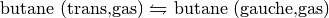
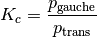
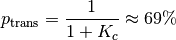
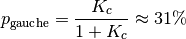
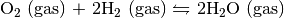
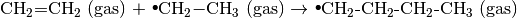
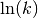
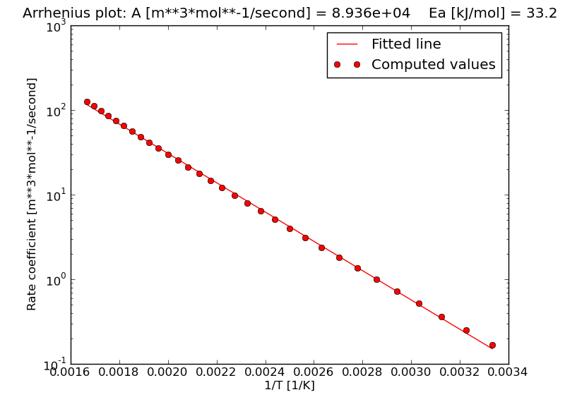

9. Chemical Physics – Basic TAMkin recipes¶
In this chapter, we discuss a few example scripts for TAMkin in detail. They can be used as a template for writing new scripts, which is much easier than starting from scratch. There are more examples in the examples/ directory than those discussed here. Assuming TAMkin is downloaded in a directory ~/code/, then one will find the examples on the following location:
toon@poony ~> cd ~/code/tamkin/examples
toon@poony ~/code/tamkin/examples> ls
001_ethane
002_linear_co2
003_pentane
004_alkanes
005_acrylamide_reaction
006_5T_ethene_reaction
007_mfi_propene_reaction
...
9.1. Thermodynamic properties of a molecule¶
TODO: see examples/001_ethane for now.
9.2. Conformational Equilibrium¶
We will study the thermodynamic equilibrium between the two butane conformers: trans and gauche. The balance is as follows:

Both butane geometries are optimized using the B3LYP/6-31G(d) level of theory, and consequently frequency computations are carried out using Gaussian03. The formatted checkpoint files of the frequency jobs are trans.fchk and gauche.fchk respectively. This is a trivial example, but one must not forget to take into account the degeneracy of the gauche ground state, i.e. there as a left-handed and a right-handed gauche state.
The script below computes the equilibrium constant of the conformational equilibrium constant at different temperatures: 300K, 400K, 500K and 600K. The multiplicity option of the electronic contribution is (ab)used to take into account the geometrical gauche multiplicity.
File: examples/020_butane_conformers/equilibrium.py
# Import libraries.
from tamkin import * # The TAMkin library
# Load the molecules (including the Hessian etc.)
mol_trans = load_molecule_g03fchk("trans.fchk")
mol_gauche = load_molecule_g03fchk("gauche.fchk")
# Perform normal mode analysis on the molecules
nma_trans = NMA(mol_trans, ConstrainExt())
nma_gauche = NMA(mol_gauche, ConstrainExt())
# Construct the partition functions.
pf_trans = PartFun(nma_trans, [ExtTrans(), ExtRot()])
pf_gauche = PartFun(nma_gauche, [ExtTrans(), ExtRot(), Electronic(multiplicity=2)])
# Define a kinetic model for the chemical reaction.
tm = ThermodynamicModel([pf_trans], [pf_gauche])
# Write tables with the principal energies at 300K, 400K, 500K and 600K
tm.write_table(300, "equilibrium300.csv")
tm.write_table(400, "equilibrium400.csv")
tm.write_table(500, "equilibrium500.csv")
tm.write_table(600, "equilibrium600.csv")
# Write an overview of the thermodynamic model to a file
tm.write_to_file("equilibrium.txt")
The scripts writes several output files discussed in the subsections below.
9.2.1. CSV Files with the energetic analysis¶
The file conformation_energies300.csv Contains the following information.
| Temperature [K] | 300 | ||
| Quantity | Trans | Gauche | Linear combination (always in kJ/mol) |
| Signed stoichiometry | -1 | 1 | |
| Values in a.u. | |||
| Electronic energy | -158.4581 | -158.4567 | 3.5 |
| Zero-point energy | -158.3252 | -158.3237 | 3.8 |
| Internal heat (300.00K) | -158.3184 | -158.3170 | 3.7 |
| Chemical potential (300.00K) | -158.3528 | -158.3520 | 2.0 |
| Corrections in kJ/mol | |||
| Zero-point energy | 348.8 | 349.1 | 0.3 |
| Internal heat (300.00K) | 366.6 | 366.7 | 0.1 |
| Chemical potential (300.00K) | 276.5 | 274.9 | -1.5 |
| Other quantities | Unit | Value | |
| Equilibrium constant | 1 | 0.450 |
The numbers in this table are rounded to improve the readability, but the actual CSV file contains all numbers in full machine precision. The linear combination of the chemical potentials is also known as the change in free energy associated with the reaction.
From the equilibrium constant one can derive the probability of finding a trans or a gauche conformer at 300K:

Given that the probabilities sum to unity, one gets:


9.2.2. A log file with an description of the equilibrium¶
The file equilibrium.txt contains the following data:
Electronic energy difference [kJ/mol] = 3.5
Zero-point energy difference [kJ/mol] = 3.8
The chemical balance:
1.0*("Trans") <--> 1.0*("Gauche")
Partition function 0
Signed stoichiometry: -1
Title: Trans
Electronic energy [au]: -158.45806
Zero-point contribution [kJ/mol]: 348.7969543
Zero-point energy [au]: -158.32521
Contributions to the partition function:
ELECTRONIC
Multiplicity: 1
Electronic energy: -158.4580557
ROTATIONAL
Rotational symmetry number: 2
Moments of inertia [amu*bohr**2]: 77.114693 501.601343 533.985400
Threshold for non-zero moments of inertia [amu*bohr**2]: 5.485799e-04
Non-zero moments of inertia: 3
TRANSLATIONAL
Dimension: 3
Constant pressure: True
Pressure [bar]: 1.01325
BIG FAT WARNING!!!
This is an NpT partition function.
Internal heat contains a PV term (and is therefore the enthalpy).
Free energy contains a PV term (and is therefore the Gibbs free energy).
The heat capacity is computed at constant pressure.
Mass [amu]: 58.078250
VIBRATIONAL
Number of zero wavenumbers: 0
Number of real wavenumbers: 36
Number of imaginary wavenumbers: 0
Frequency scaling factor: 1.0000
Zero-point scaling factor: 1.0000
Real Wavenumbers [1/cm]:
126.0 221.0 257.8 260.9 424.2 744.3 821.0 847.3
973.7 988.5 1027.2 1072.5 1180.5 1225.4 1306.7 1340.8
1348.9 1418.7 1439.6 1442.0 1517.4 1522.0 1528.8 1530.0
1536.2 1543.7 3020.4 3028.1 3041.0 3041.7 3042.3 3064.3
3103.4 3107.5 3110.0 3110.8
Zero-point contribution [kJ/mol]: 348.7969543
Partition function 1
Signed stoichiometry: 1
Title: Gauche
Electronic energy [au]: -158.45671
Zero-point contribution [kJ/mol]: 349.0988179
Zero-point energy [au]: -158.32375
Contributions to the partition function:
ELECTRONIC
Multiplicity: 2
Electronic energy: -158.4567137
ROTATIONAL
Rotational symmetry number: 2
Moments of inertia [amu*bohr**2]: 135.679032 386.092746 451.000474
Threshold for non-zero moments of inertia [amu*bohr**2]: 5.485799e-04
Non-zero moments of inertia: 3
TRANSLATIONAL
Dimension: 3
Constant pressure: True
Pressure [bar]: 1.01325
BIG FAT WARNING!!!
This is an NpT partition function.
Internal heat contains a PV term (and is therefore the enthalpy).
Free energy contains a PV term (and is therefore the Gibbs free energy).
The heat capacity is computed at constant pressure.
Mass [amu]: 58.078250
VIBRATIONAL
Number of zero wavenumbers: 0
Number of real wavenumbers: 36
Number of imaginary wavenumbers: 0
Frequency scaling factor: 1.0000
Zero-point scaling factor: 1.0000
Real Wavenumbers [1/cm]:
112.6 216.7 266.5 324.1 433.1 756.2 799.6 840.7
972.6 979.8 1003.4 1093.9 1166.1 1209.4 1305.1 1328.6
1391.4 1397.9 1442.2 1443.2 1514.0 1517.0 1528.1 1536.6
1537.1 1542.6 3024.4 3024.9 3043.4 3045.6 3058.1 3062.0
3106.4 3107.7 3113.6 3120.2
Zero-point contribution [kJ/mol]: 349.0988179
9.3. Chemical Equilibrium¶
TODO
9.4. Heat of formation¶
In this example we compute the heat of formation of the water molecule (in gas phase). This comes down to the computation of the chemical equilibrium properties of the following reaction:

As we will see below, this is not an equilibrium reaction, so the term chemical equilibrium is somewhat misleading. The point is that the underlying computation is exactly that of any other thermodynamic equilibrium with TAMkin.
We prepared optimized geometries and frequency computations for the three components at the B3LYP/6-31G(d) level using Gaussian03. The formatted checkpoint files of the frequency jobs are oxygen.fchk, hydrogen.fchk and water.fchk.
The following script computes the heat of formation at 298.15K.
File: examples/021_water_formation/formation.py
# Import libraries.
from tamkin import * # The TAMkin library
# Load the molecules (including the Hessian etc.)
mol_oxygen = load_molecule_g03fchk("oxygen.fchk")
mol_hydrogen = load_molecule_g03fchk("hydrogen.fchk")
mol_water = load_molecule_g03fchk("water.fchk")
# Perform normal mode analysis on the molecules
nma_oxygen = NMA(mol_oxygen, ConstrainExt())
nma_hydrogen = NMA(mol_hydrogen, ConstrainExt())
nma_water = NMA(mol_water, ConstrainExt())
# Construct the partition functions.
pf_oxygen = PartFun(nma_oxygen, [ExtTrans(), ExtRot()])
pf_hydrogen = PartFun(nma_hydrogen, [ExtTrans(), ExtRot()])
pf_water = PartFun(nma_water, [ExtTrans(), ExtRot()])
# Define a kinetic model for the chemical reaction.
tm = ThermodynamicModel([pf_oxygen, (pf_hydrogen, 2)], [(pf_water, 2)])
# Write tables with the principal energies at 298.15K
tm.write_table(298.15, "formation.csv")
# Write an overview of the thermodynamic model to a file
tm.write_to_file("formation.txt")
Pay special attention to the way the stoichiometry of the balance is passed to the ThermodynamicModel constructor. One can always replace a partition function, pf, with a tuple (pf, st) where st is the stoichiometry, which does not have to be an integer. The same can be done with the KineticModel constructor.
9.4.1. CSV Files with the energetic analysis¶
The thermodynamic equilibrium properties at 298.15 K are summarized in the file formation.csv.
| Temperature [K] | 298.15 | |||
| Quantity | Oxygen | Hydrogen | Water | Linear combination (always in kJ/mol) |
| Signed stoichiometry | -1 | -2 | 2 | |
| Values in a.u. | ||||
| Electronic energy | -150.2574 | -1.1755 | -76.4090 | -550 |
| Zero-point energy | -150.2537 | -1.1653 | -76.3878 | -502 |
| Internal heat (298.15K) | -150.2504 | -1.1620 | -76.3840 | -508 |
| Chemical potential (298.15K) | -150.2726 | -1.1768 | -76.4055 | -485 |
| Corrections in kJ/mol | ||||
| Zero-point energy | 10 | 27 | 56 | 48 |
| Internal heat (298.15K) | 19 | 35 | 65 | 42 |
| Chemical potential (298.15K) | -40 | -4 | 9 | 65 |
| Other quantities | Unit | Value | ||
| Equilibrium constant | m**3*mol**-1 | 2.068e+83 |
The linear combination of internal heats is the heat of formation of two water molecules (due to the stoichiometry). For a single water molecule, one gets about 254 kJ/mol. The experimental value reported on the NIST Chemistry webbook is about 242 kJ/mol.
9.4.2. A log file with an description of the equilibrium¶
The file formation.txt contains the following data:
Electronic energy difference [kJ/mol] = -550.1
Zero-point energy difference [kJ/mol] = -502.1
The chemical balance:
1.0*("Oxygen") + 2.0*("Hydrogen") <--> 2.0*("Water")
Partition function 0
Signed stoichiometry: -1
Title: Oxygen
Electronic energy [au]: -150.25743
Zero-point contribution [kJ/mol]: 9.8303186
Zero-point energy [au]: -150.25368
Contributions to the partition function:
ELECTRONIC
Multiplicity: 1
Electronic energy: -150.2574266
ROTATIONAL
Rotational symmetry number: 2
Moments of inertia [amu*bohr**2]: -0.000000 42.224541 42.224541
Threshold for non-zero moments of inertia [amu*bohr**2]: 5.485799e-04
Non-zero moments of inertia: 2
TRANSLATIONAL
Dimension: 3
Constant pressure: True
Pressure [bar]: 1.01325
BIG FAT WARNING!!!
This is an NpT partition function.
Internal heat contains a PV term (and is therefore the enthalpy).
Free energy contains a PV term (and is therefore the Gibbs free energy).
The heat capacity is computed at constant pressure.
Mass [amu]: 31.989829
VIBRATIONAL
Number of zero wavenumbers: 0
Number of real wavenumbers: 1
Number of imaginary wavenumbers: 0
Frequency scaling factor: 1.0000
Zero-point scaling factor: 1.0000
Real Wavenumbers [1/cm]:
1643.5
Zero-point contribution [kJ/mol]: 9.8303186
Partition function 1
Signed stoichiometry: -2
Title: Hydrogen
Electronic energy [au]: -1.17548
Zero-point contribution [kJ/mol]: 26.6354070
Zero-point energy [au]: -1.16534
Contributions to the partition function:
ELECTRONIC
Multiplicity: 1
Electronic energy: -1.1754824
ROTATIONAL
Rotational symmetry number: 2
Moments of inertia [amu*bohr**2]: -0.000000 0.992848 0.992848
Threshold for non-zero moments of inertia [amu*bohr**2]: 5.485799e-04
Non-zero moments of inertia: 2
TRANSLATIONAL
Dimension: 3
Constant pressure: True
Pressure [bar]: 1.01325
BIG FAT WARNING!!!
This is an NpT partition function.
Internal heat contains a PV term (and is therefore the enthalpy).
Free energy contains a PV term (and is therefore the Gibbs free energy).
The heat capacity is computed at constant pressure.
Mass [amu]: 2.015650
VIBRATIONAL
Number of zero wavenumbers: 0
Number of real wavenumbers: 1
Number of imaginary wavenumbers: 0
Frequency scaling factor: 1.0000
Zero-point scaling factor: 1.0000
Real Wavenumbers [1/cm]:
4453.1
Zero-point contribution [kJ/mol]: 26.6354070
Partition function 2
Signed stoichiometry: 2
Title: Water
Electronic energy [au]: -76.40895
Zero-point contribution [kJ/mol]: 55.5664022
Zero-point energy [au]: -76.38779
Contributions to the partition function:
ELECTRONIC
Multiplicity: 1
Electronic energy: -76.4089533
ROTATIONAL
Rotational symmetry number: 2
Moments of inertia [amu*bohr**2]: 2.291774 4.174463 6.466237
Threshold for non-zero moments of inertia [amu*bohr**2]: 5.485799e-04
Non-zero moments of inertia: 3
TRANSLATIONAL
Dimension: 3
Constant pressure: True
Pressure [bar]: 1.01325
BIG FAT WARNING!!!
This is an NpT partition function.
Internal heat contains a PV term (and is therefore the enthalpy).
Free energy contains a PV term (and is therefore the Gibbs free energy).
The heat capacity is computed at constant pressure.
Mass [amu]: 18.010565
VIBRATIONAL
Number of zero wavenumbers: 0
Number of real wavenumbers: 3
Number of imaginary wavenumbers: 0
Frequency scaling factor: 1.0000
Zero-point scaling factor: 1.0000
Real Wavenumbers [1/cm]:
1713.1 3727.4 3849.4
Zero-point contribution [kJ/mol]: 55.5664022
Note how TAMkin picks up the right rotational symmetry numbers and the non-zero moments of inertia.
9.5. Reaction Kinetics (unimolecular)¶
TODO
9.6. Reaction Kinetics (bimolecular)¶
In this example we show how one estimates kinetic parameters for the addition of ethene to ethyl in the gas phase at constant pressure. The reaction balance is

For this example we prepared three frequency computations:
- One for each ground state geometry of the reactants (ethene and ethyl). The formatted checkpoint files of the frequency jobs are ethene.fchk and ethyl.fchk.
- One for the transition state where ethene performs a trans attack on ethyl. The geometry of the transition state is optimized towards the saddle point in the potential energy surface. The formatted checkpoint file of the frequency job is ts_trans.fchk.
The frequency computations are carried out with Gaussian03. The level of theory
is B3LYP/6-31G(d). The following script computes the kinetic parameters (A and
Ea) through a linear fit of  versus  in the
temperature range 300K-600K.
in the
temperature range 300K-600K.
File: examples/019_ethyl_ethene_simple/kinetic.py
1 2 3 4 5 6 7 8 9 10 11 12 13 14 15 16 17 18 19 20 21 22 23 24 25 26 27 28 | # Import libraries.
from tamkin import * # The TAMkin library
# Load the molecules (including the Hessian etc.)
mol_ethyl = load_molecule_g03fchk("ethyl.fchk")
mol_ethene = load_molecule_g03fchk("ethene.fchk")
mol_ts_trans = load_molecule_g03fchk("ts_trans.fchk")
# Perform normal mode analysis on the molecules
nma_ethyl = NMA(mol_ethyl, ConstrainExt())
nma_ethene = NMA(mol_ethene, ConstrainExt())
nma_ts_trans = NMA(mol_ts_trans, ConstrainExt())
# Construct the partition functions.
pf_ethyl = PartFun(nma_ethyl, [ExtTrans(), ExtRot()])
pf_ethene = PartFun(nma_ethene, [ExtTrans(), ExtRot()])
pf_ts_trans = PartFun(nma_ts_trans, [ExtTrans(), ExtRot()])
# Define a kinetic model for the chemical reaction.
km_trans = KineticModel([pf_ethyl, pf_ethene], pf_ts_trans)
# Write tables with the principal energies at 300K, 400K, 500K and 600K
km_trans.write_table(300, "kinetic300.csv")
km_trans.write_table(400, "kinetic400.csv")
km_trans.write_table(500, "kinetic500.csv")
km_trans.write_table(600, "kinetic600.csv")
# Analyze the chemical reactions.
ra_trans = ReactionAnalysis(km_trans, 300, 600)
# Make the Arrhenius plot
ra_trans.plot_arrhenius("arrhenius.png")
# Write the analysis to a file
ra_trans.write_to_file("kinetic.txt")
|
The scripts writes several output files discussed in the subsections below.
9.6.1. CSV Files with the energetic analysis¶
CSV files are created for different temperatures: 300K, 400K, 500K and 600K. The file at 300 K contains the following data:
| Temperature [K] | 300 | |||
| Quantity | Ethyl | Ethene | Transition state | Linear combination (always in kJ/mol) |
| Signed stoichiometry | -1 | -1 | 1 | |
| Values in a.u. | ||||
| Electronic energy | -79.1579 | -78.5875 | -157.7371 | 22 |
| Zero-point energy | -79.0982 | -78.5362 | -157.6231 | 30 |
| Internal heat (300.00K) | -79.0933 | -78.5322 | -157.6157 | 26 |
| Chemical potential (300.00K) | -79.1225 | -78.5573 | -157.6536 | 69 |
| Corrections in kJ/mol | ||||
| Zero-point energy | 157 | 134 | 299 | 8 |
| Internal heat (300.00K) | 170 | 145 | 319 | 4 |
| Chemical potential (300.00K) | 93 | 79 | 219 | 47 |
| Other quantities | Unit | Value | ||
| Rate constant | m**3*mol**-1/second | 0.167 |
The numbers in this table are rounded to improve the readability, but the actual CSV file contains all numbers in full machine precision. The linear combination of the chemical potentials is also known as the change in free energy associated with the reaction.
9.6.2. Arrhenius plot¶
The file arrhenius.png contains the Arrhenius plot. This plot can be used for a visual check of the linear regression analysis to estimate the kinetic parameters.
9.6.3. A log file with an analysis of the kinetic parameters¶
This file is written to the file kinetic.txt. It contains the following data:
Summary
A [m**3*mol**-1/second] = 8.93643e+04
ln(A [a.u.]) = -10.63
Ea [kJ/mol] = 33.16
R2 (Pearson) = 99.94%
Temperature grid
T_low [K] = 300.0
T_high [K] = 600.0
T_step [K] = 10.0
Number of temperatures = 31
Reaction rate constants
T [K] Delta_r F [kJ/mol] k(T) [m**3*mol**-1/second]
300.00 68.7 1.66848e-01
310.00 70.1 2.48896e-01
320.00 71.6 3.62870e-01
330.00 73.0 5.18109e-01
340.00 74.4 7.25806e-01
350.00 75.9 9.99197e-01
360.00 77.3 1.35374e+00
370.00 78.7 1.80731e+00
380.00 80.1 2.38032e+00
390.00 81.6 3.09593e+00
400.00 83.0 3.98015e+00
410.00 84.4 5.06200e+00
420.00 85.8 6.37365e+00
430.00 87.3 7.95046e+00
440.00 88.7 9.83115e+00
450.00 90.1 1.20579e+01
460.00 91.5 1.46762e+01
470.00 92.9 1.77354e+01
480.00 94.4 2.12883e+01
490.00 95.8 2.53912e+01
500.00 97.2 3.01043e+01
510.00 98.6 3.54916e+01
520.00 100.0 4.16205e+01
530.00 101.4 4.85623e+01
540.00 102.8 5.63922e+01
550.00 104.2 6.51888e+01
560.00 105.6 7.50346e+01
570.00 107.1 8.60158e+01
580.00 108.5 9.82222e+01
590.00 109.9 1.11747e+02
600.00 111.3 1.26688e+02
Electronic energy barrier [kJ/mol] = 21.6
Zero-point energy barrier [kJ/mol] = 29.7
Reactant 0 partition function
Title: Ethyl
Electronic energy [au]: -79.15787
Zero-point contribution [kJ/mol]: 156.6101213
Zero-point energy [au]: -79.09822
Contributions to the partition function:
ELECTRONIC
Multiplicity: 2
Electronic energy: -79.1578683
ROTATIONAL
Rotational symmetry number: 1
Moments of inertia [amu*bohr**2]: 17.468474 79.684868 85.942337
Threshold for non-zero moments of inertia [amu*bohr**2]: 5.485799e-04
Non-zero moments of inertia: 3
TRANSLATIONAL
Dimension: 3
Constant pressure: True
Pressure [bar]: 1.01325
BIG FAT WARNING!!!
This is an NpT partition function.
Internal energy contains a PV term (and is therefore the enthalpy).
Free energy contains a PV term (and is therefore the Gibbs free energy).
The heat capacity is computed at constant pressure.
Mass [amu]: 29.039125
VIBRATIONAL
Number of zero wavenumbers: 0
Number of real wavenumbers: 15
Number of imaginary wavenumbers: 0
Frequency scaling factor: 1.0000
Zero-point scaling factor: 1.0000
Real Wavenumbers [1/cm]:
123.7 457.5 817.9 995.0 1074.2 1207.6 1430.1 1492.4
1510.8 1514.8 2965.5 3058.3 3102.3 3168.1 3264.7
Zero-point contribution [kJ/mol]: 156.6101213
Reactant 1 partition function
Title: Ethene
Electronic energy [au]: -78.58746
Zero-point contribution [kJ/mol]: 134.4868825
Zero-point energy [au]: -78.53624
Contributions to the partition function:
ELECTRONIC
Multiplicity: 1
Electronic energy: -78.5874587
ROTATIONAL
Rotational symmetry number: 4
Moments of inertia [amu*bohr**2]: 12.280076 60.075552 72.355628
Threshold for non-zero moments of inertia [amu*bohr**2]: 5.485799e-04
Non-zero moments of inertia: 3
TRANSLATIONAL
Dimension: 3
Constant pressure: True
Pressure [bar]: 1.01325
BIG FAT WARNING!!!
This is an NpT partition function.
Internal energy contains a PV term (and is therefore the enthalpy).
Free energy contains a PV term (and is therefore the Gibbs free energy).
The heat capacity is computed at constant pressure.
Mass [amu]: 28.031300
VIBRATIONAL
Number of zero wavenumbers: 0
Number of real wavenumbers: 12
Number of imaginary wavenumbers: 0
Frequency scaling factor: 1.0000
Zero-point scaling factor: 1.0000
Real Wavenumbers [1/cm]:
834.8 956.1 976.1 1070.1 1248.0 1395.8 1494.3 1720.2
3151.9 3167.3 3222.2 3247.7
Zero-point contribution [kJ/mol]: 134.4868825
Transition state partition function
Title: Transition state
Electronic energy [au]: -157.73711
Zero-point contribution [kJ/mol]: 299.2533370
Zero-point energy [au]: -157.62313
Contributions to the partition function:
ELECTRONIC
Multiplicity: 2
Electronic energy: -157.7371095
ROTATIONAL
Rotational symmetry number: 1
Moments of inertia [amu*bohr**2]: 92.846631 597.569081 642.613097
Threshold for non-zero moments of inertia [amu*bohr**2]: 5.485799e-04
Non-zero moments of inertia: 3
TRANSLATIONAL
Dimension: 3
Constant pressure: True
Pressure [bar]: 1.01325
BIG FAT WARNING!!!
This is an NpT partition function.
Internal energy contains a PV term (and is therefore the enthalpy).
Free energy contains a PV term (and is therefore the Gibbs free energy).
The heat capacity is computed at constant pressure.
Mass [amu]: 57.070425
VIBRATIONAL
Number of zero wavenumbers: 0
Number of real wavenumbers: 32
Number of imaginary wavenumbers: 1
Frequency scaling factor: 1.0000
Zero-point scaling factor: 1.0000
Real Wavenumbers [1/cm]:
48.5 154.6 157.1 247.0 370.8 547.0 765.2 823.5
831.9 848.8 917.8 1024.8 1035.8 1075.2 1228.4 1247.8
1317.9 1432.1 1487.2 1498.5 1514.5 1518.4 1609.4 2985.9
3061.7 3100.7 3149.1 3153.7 3163.8 3225.6 3237.2 3251.4
Imaginary Wavenumbers [1/cm]:
-383.6
Zero-point contribution [kJ/mol]: 299.2533370
9.7. Reaction Kinetics with BSSE corrections (bimolecular)¶
There is little special required to include BSSE corrected energies for transition states or complexes. In addition to the frequency computation output, TAMkin also requires an output file from a BSSE computation.
In the case of a Gaussian computation, one justs replaces the normal way to load the molecule,
mol = load_molecule_g03fchk("freq.fchk")
by
mol = load_molecule_g03fchk("freq.fchk", "bsse.fchk")
One may compute the BSSE corrected energy at a refined level of theory.
9.8. Reaction Kinetics with internal rotors (bimolecular)¶
TODO
9.9. Thermodynamic isotope effects¶
TODO
9.10. Kinetic isotope effects¶
TODO: see examples/015_kie for now.
9.11. Physisorption¶
TODO: see examples/018_physisorption for now.
9.12. Chemisorption¶
TODO
9.13. Reaction kinetics on a surface¶
TODO
9.14. Reactions with a pre-reactive complex¶
TODO: see examples/017_activationkineticmodel for now.

Table Of Contents
- 9. Chemical Physics – Basic TAMkin recipes
- 9.1. Thermodynamic properties of a molecule
- 9.2. Conformational Equilibrium
- 9.3. Chemical Equilibrium
- 9.4. Heat of formation
- 9.5. Reaction Kinetics (unimolecular)
- 9.6. Reaction Kinetics (bimolecular)
- 9.7. Reaction Kinetics with BSSE corrections (bimolecular)
- 9.8. Reaction Kinetics with internal rotors (bimolecular)
- 9.9. Thermodynamic isotope effects
- 9.10. Kinetic isotope effects
- 9.11. Physisorption
- 9.12. Chemisorption
- 9.13. Reaction kinetics on a surface
- 9.14. Reactions with a pre-reactive complex
Previous topic
8. Chemical Physics – Working with TAMkin
Next topic
10. Chemical Physics – Advanced TAMkin examples